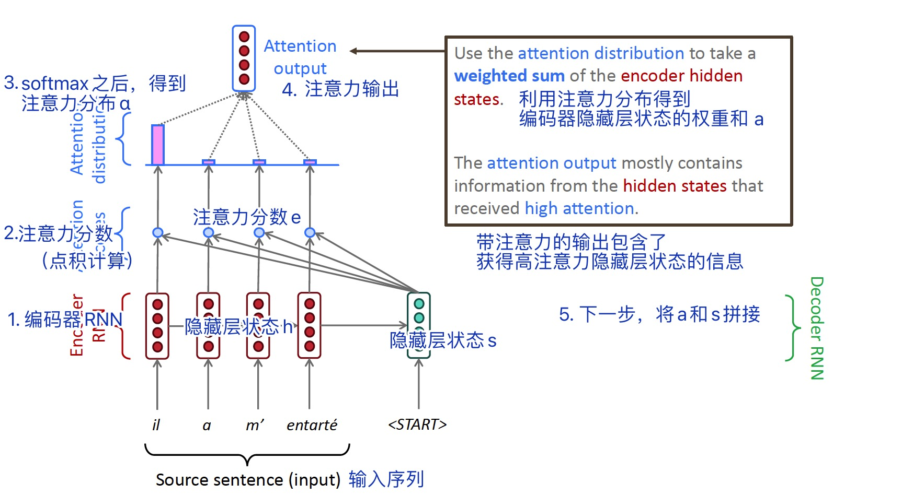

Lecture07: 机器翻译、seq2seq模型、注意力机制¶
本节主要内容¶
- 机器翻译任务
- seq2seq模型架构
- 注意力机制
1 深度学习之前的机器翻译¶
1.1 机器翻译任务定义¶
机器翻译（Machine Translation, MT）任务：将句子x从一种语言（Source Language）翻译成另一种语言（Target Language）的句子y。
1.2 机器翻译的发展阶段¶
- 1950s: 早期机器翻译
- 1990s-2010s: 基于统计的机器翻译（Statistics Machine Translation, SMT）
- 2014-: 基于神经网络的机器翻译（Neural Machine Translation, NMT）
- 2017-: 以Transformer为代表的预训练模型时代
1.3 基于统计的机器翻译¶
基于统计的机器翻译（Statistics Machine Translation, SMT）的核心思想是从数据中学习一个概率模型。
例如，给定一个法语语句x，找出对应的最合适的英文翻译语句y，公式如下： $$ argmax_yP(y|x) $$ 利用贝叶斯公式，可以将上述概率转化为两部分，分别进行学习： $$ argmax_yP(x|y)P(y) $$ 上式中，P(x|y)代表翻译模型（Translation Model），负责学习如何准确翻译单词、短语（fidelity，保真性）；P(y)代表语言模型（Language Model），是对语言的流畅性（fluency）进行学习。（注：对应翻译的两个标准：忠实、通顺）
那么，如何学习翻译模型P(x|y)？
首先，需要大量的平行数据（Parallel Data），如大量人工翻译的法语/英语语句对。
然后，引入隐变量a：P(x, a|y)，a是alignment，即语句x和语句y之间的单词级别的对应关系。这种对应非常负责，考虑以下情形：
- 有些单词没有或不需要对应的翻译词（no counterpart）
- 多个单词对应一个翻译词（many-to-one）
- 一个单词对应多个翻译词（one-to-many）
- 多个单词对应多个翻译词（many-to-many）
对应关系alignment没有显性地存在于数据中，因此需要特殊的学习算法（如EM算法）。
基于统计的机器翻译缺点如下：
- 整个翻译系统及其复杂，包含大量未提及的细节和单独设计的子模块
- 需要大量的特征工程（需要针对不同的特殊用法设计各种特征）
- 需要大量的人力和成本来维护语料资源
2 基于神经网络的机器翻译¶
基于神经网络的机器翻译（Neural Machine Translation, NMT）是一种用端对端神经网络进行机器翻译的方式。这种神经网络架构称为sequence-to-sequence（seq2seq）模型，包含两个循环神经网络（RNNs）。
seq2seq不只在机器翻译中使用，还被广泛应用于以下任务：
- 文本摘要
- 对话系统
- 句法解析
- 代码生成
seq2seq可以视为条件语言模型（Conditional Language Model）的一种：
- 语言模型是因为它的解码器用于预测目标语句y的下一个单词
- 条件是因为它的预测是基于源语句x的（条件概率）
NMT直接计算P(y|x)： $$ P(y|x) = P(y_1|x)P(y_2|y_1,x)P(y_3|y_1,y_2,x)...P(y_T|y_1,...,y_{T-1}, x) $$ 其中，P(y_T|y_1,...,y_{T-1}, x)表示给定已有的目标单词和源语句x，下一个目标单词的概率。
训练NMT需要大量平行语料，并且可以使用多层RNN。
RNN有两种解码方式：
- Greedy decoding
- Beam search decoding
相较于SMT，NMT有如下优点：
- 性能更好
- 没有子模块
- 降低了人力需求（不需要特征工程和考虑特例）
同时也有如下缺点：
- 不可解释性
- 很难受控制
从BLEU（Bilingual Evaluation Understudy）评测结果可以看出，NMT的性能已经远远超过SMT。
NMT可能是深度学习在NLP中最成功的应用：
-
2014年，seq2seq论文发表；
-
2016年，NMT成为机器翻译的标准方法，谷歌翻译从SMT转为NMT；
-
2018年，所有公司的翻译工具均应用了NMT。
然而，机器学习任务并未被彻底终结，许多困难仍然存在，如常识信息未得到应用、背景信息在长文本中难以维护以及模型偏见等。
3 注意力机制¶
3.1 seq2seq架构存在的问题¶
- 语义向量可能无法完全捕捉到整个输入序列的信息；
- 先输入到网络的内容携带的信息会被后输入的信息覆盖掉。输入序列越长，这个现象就越严重。
因此，Attention（注意力机制）提供了一种解决方法。
3.2 有注意力机制的seq2seq模型¶
注意力机制的核心思路是：在解码器进行解码的每一步，直接连接到编码器来关注输入序列中的特定部分。

3.3 注意力机制的公式表示¶
假设编码器隐藏状态为h_1,...,h_N∈R^h，在时间步t时解码器的隐藏状态为s_t∈R^h，则该时间步的注意力分数e_t可以表示为：
然后使用softmax得到注意力概率分布α^t：
利用α^t计算编码器隐藏状态的权重和，得到注意力输出a_t：
最后，将注意力输出a_t与解码器隐藏状态s_t拼接，后续的处理与没有注意力的seq2seq模型一样。
3.3 注意力机制的优点¶
- 显著提升了NMT性能
- 解决了3.1中提到的seq2seq架构中的问题
- 对解决梯度消失问题有一定帮助[?]
- 提供了一定的可解释性
3.4 注意力机制是一种广泛性的深度学习技巧¶
注意力可以用于多种架构（不限于seq2seq）和多种任务（不限于机器翻译）中。
因此，一种更广义的注意力定义是：给定一组向量values（值），和一个向量query（查询），注意力是一种基于query计算values的带权重的和的技巧。
3.5 注意力分数的计算¶
假设h_1,...,h_N∈R^{d1}，s∈R^{d2}，那么注意力分数e_t∈R^N有多种计算方式：
-
点积注意力（Basic dot-product attention） $$ e_i = s^Th_i∈R $$
-
乘法注意力（Multiplicative attention） $$ e_i = s^TWh_i∈R $$ 其中，W是权重矩阵。
-
加性注意力（Additive attention） $$ e_i = v^Ttanh(W_1h_i + W_2s)∈R $$ 其中，W_1, W_2是权重矩阵，v是权重向量。